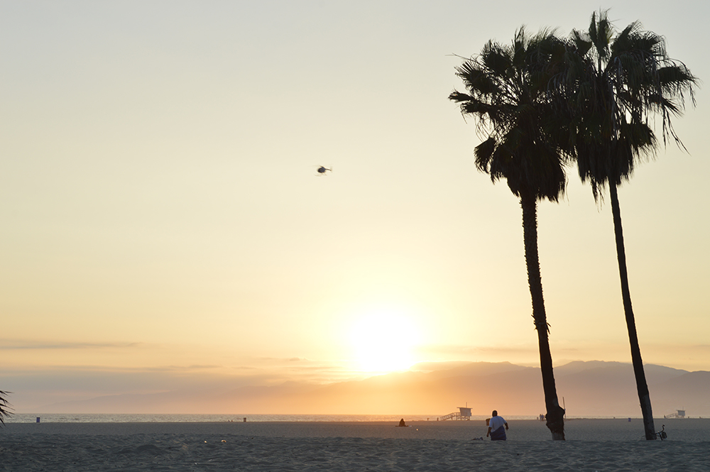
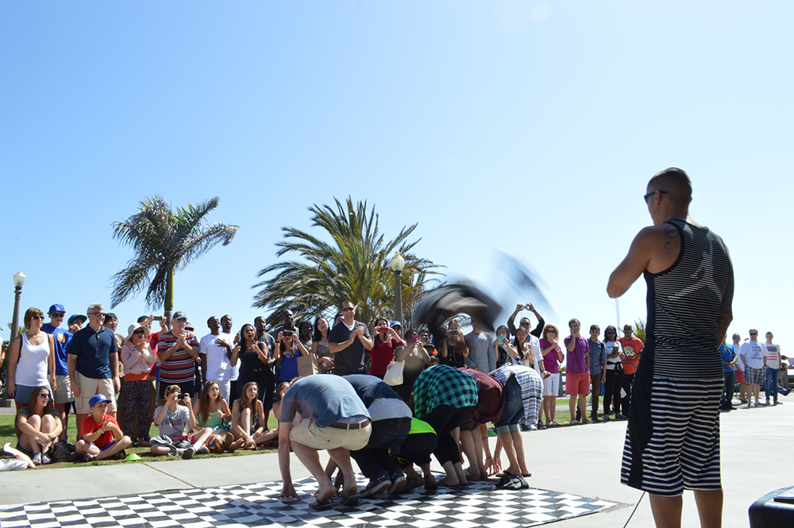
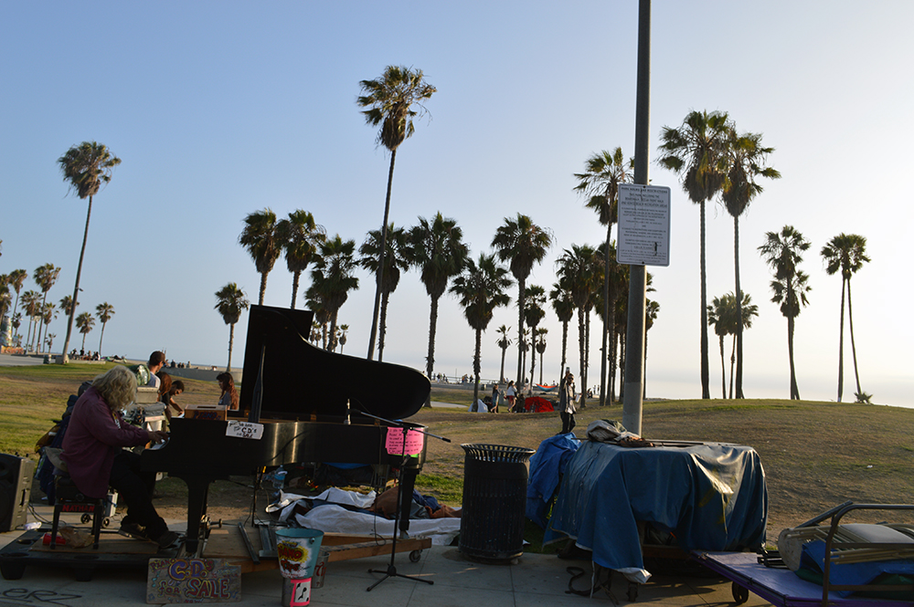
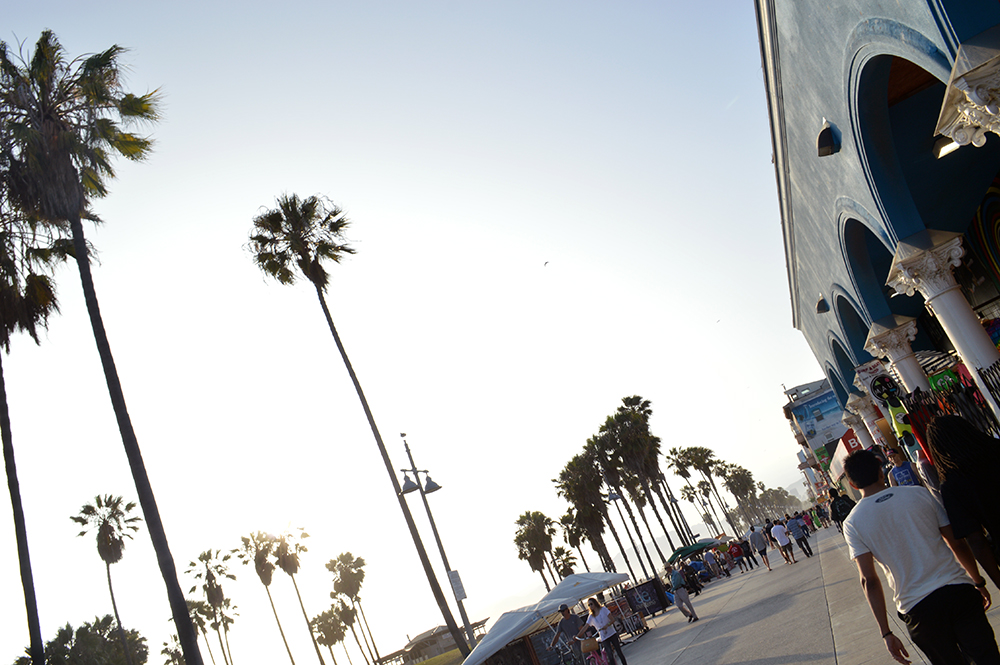

Venice Beach
Things to do
The interesting part of Venice Beach starts on Washington blv. Once you cross Pacific ave there are a few restaurants where you can grab a bite if you're hungry.
Once you get to the beach, you can chill on the sand or play bolleyball, but since we're talking about Venice Beach, you'll only see locals doing that. Venice Beach is not the most conventional beach.
What you want to do is walk towards Santa Monica. You'll see all kinds of things there. From homless and cripy people to street performes (breakdancers, musicians, etc).There are a lot of artists as well.
 Things to know
- You definitely want to go during the weekend.
- The best time to go is around noon.
- Bring cash if you're thinking about buying art or souvenirs.
- You can visit Venice Beach and Santa Monica's pier on the same day.